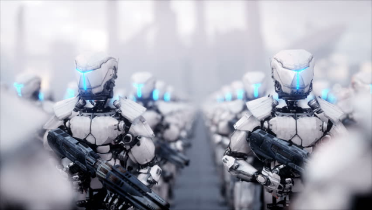

Nous avons tous déjà visionné des films mettant en place le soldat augmenté, tels que Iron Man, Terminator, Captain America, RoboCop, Wolverine, Deadpool, et Gi Joe. Mais que sont-ils?
Les soldats augmentés sont des humains qui ont été modifiés pour accroître leurs capacités cognitives, leur force, leur vision, ainsi que d’autres facultés. Ces super-soldats sont générés par des scientifiques spécialisés en armements et combat, qui ont effectué plusieurs test et recherches pour parvenir à créer les soldats parfaits, capable de défendre leur pays dans n’importe quelle situation.
Mais au lieu d’investir des millions de dollars à la création de technologie de pointe pour faire la guerre, pourquoi ne pas simplement rendre les soldats plus forts?
Il pourrait exister une grande variété de soldats surhumains qui peuvent être formés sur décision du Conseil Militaire, en fonction de leur éthique et du vote populaire. La première sorte de super-soldats sont les exosquelettes, composés d’un squelette artificiel en métal, qui améliore les capacités physiques dans des tâches telles que déplacer des poids lourds, être capable de se déplacer physiquement plus rapidement, etc. Le deuxième type de soldats surhumains sont ceux qui consomment des drogues: les soldats anthropotechniques. Grâce à des substances injectées ou consommées, les soldats acquièrent temporairement des facultés nouvelles, leurs sens sont plus aiguisés, et leur force est améliorée. Aussi, des mutations sont produites en laboratoire en modifiant l’ADN d’une personne, causant ainsi une modification permanente de ses capacités physiques et psychologiques, tout comme c’est le cas de Captain America, de la franchise Marvel.
Les conséquences :
Un des points positifs d’avoir des super-soldats est qu’un seul soldat amélioré serait équivalent à plusieurs soldats “normaux”, ce qui ferait moins de morts sur le champ de bataille.
L'autre raison pour laquelle avoir des super-soldats est une bonne chose, est qu’il est plus facile de gagner des guerres contre d'autres pays ou des organisations terroristes, grâce à des armes et des soldats améliorés, les rendant plus forts, que ce soit physiquement, ou mentalement.
Puis, la fabrication de plus d'équipements ou de médicaments pourrait avoir un effet positif sur la croissance économique, car les entreprises commenceraient à les vendre à l'armée en grandes quantités, la plupart des pays ayant un budget militaire important.
La création de super-soldats peut aller à l'encontre de plusieurs lois internationales mise en œuvre, comme les lois de Nuremberg selon lesquelles chaque homme a le droit de choisir s'il veut participer à des essais médicaux ou non.
Un soldat mort ou capturé avec le type d'équipement ou de modification pourrait aider les ennemis à en savoir plus à son sujet et peut-être à en faire une copie ou à en faire une meilleure version.
Les guerres vont devenir plus meurtrières, dû aux soldats qui auront la capacité de faire plus de dégâts, ce qui signifie plus de destruction, provoquant un effet négatif sur l'environnement, engendrant des hommes mourants, et des civils fuyant leur pays en raison d'une guerre trop violente.
En conclusion, l’augmentation humaine pourrait être utilisée dans le cadre du militaire pour créer ces super soldats. La recherche pour créer des nouveaux types de soldats est déjà une réalité en 2021. Il n’y a pas beaucoup d’information disponible au public, car j’imagine que c’est des tests « top-secret », mais les types de soldats qui sont vu dans des films Sci-Fi pourrait devenir une réalité dans les prochaines années ou décennies.
Pensez-vous que les soldats augmentés nous seraient utiles en situation de guerre, ou pourraient-ils mener à la fin du monde?
Entrée par Joseph Nasr
Référence : BAILLARGEON, Stéphane. « Technologies: à quoi ressemblera le soldat de demain? » dans Le Dervoir, 6 mars 2021, URL : https://www.ledevoir.com/societe/596447/defense-plus-qu-un-simple-soldat